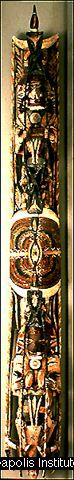

The people of Lesu (LES-sue) fled their New Ireland homes to a
nearby island to escape a frightening monstrous pig named Luana (loo-AH-na). Luana ate people. The people left behind
the old woman Tsenabonpil, fearing that her severely swollen leg would sink
their boat.
Tsenabonbil gave birth to twin boys, Daror (DAH-roar) and Damuramurari
(dah-moo-rah-moo-RAH-ree). When they were older, Tsenabonpil told the boys
they must kill the evil pig, Luana. After many adventures they managed to
capture and kill the pig. Tsenabonpil then attached some of the pig's hair to
a coconut and floated it out to the exiled Lesu people to let them know that
Luana was dead.
When the Lesu people returned in their canoes, Tsenabonpil assigned them
their social structure. She designated the two marriage classes - the Eagle and
the Hawk - and gave names to the many clans. She gave the Lesu knowledge of magic,
medicine, and crafts. When Tsenabonpil was done, she and her sons disappeared
forever.
New Ireland
New Ireland is a province of Papua New Guinea (pop-poo-ah
noo GI-nee) and the second largest island in northwestMelanesia. It forms part of the Bismarck Archipelago.
Tropical rainforests cover much of the island, and a wide variety of birds,
reptiles, and sea animals live there. Mammals are scarce, except for
marsupials, pigs, and dogs. The importance of the natural world to the people
of New Ireland is evident in their traditional social structure, mythology,
festivals, and art.
Malagan
One of the central events in the social, economic, and
aesthetic life of New Ireland communities is the malagan, a festival
held in honor of deceased clan members. The elaborate funeral rites and
festivities commemorate ancestors as well as help the souls of the dead depart
the world of the living and acclimate to the world of the dead. The malagan
festival, which may be held several months, or even years, after a person's
death, brings together large social groups and provides an opportunity for the
moiety and clan to express solidarity.
Elaborately carved sculptures are important aspects of the malagan festival.
On the northern coast of New Ireland a clan member commissions a carver to make
special sculptures to be revealed during festival performances. Depending on
the number ordered, a single commission may take several months to complete.
The ritual process of producing malagan sculptures is complex and
time-consuming; it is as much a part of the festivities as the performance
itself. After the sculptures are carved and dried, they are placed in an
enclosure built in or near the cemetery. Sea-snail shells are placed into the
eye sockets of the figures. Only then can the sculptures be painted.
The dramatic unveiling of the malagan figures at the end of the festivities
is accompanied by generous feasts and dances at which the spirits of the dead
are believed to be present. The sculptures serve little or no practical
function after a festival and are often left to rot.
 Malagan Pole
Standing more than eight feet tall, this malagan pole is
made up of many intricately intertwined animals and humans. At the top, a man crouches on a frigate bird, and at the
bottom, a woman stands on the head of a wild pig. In the middle of the pole is a complex GEOMETRIC design, called a mataling (MAH-ta-ling), or "eye of fire."
At its center is an eye
INLAID with snail shell. A pair of dark, elegantly decorated frigate birds
face the "eye of fire." The lengthy tail feathers of the upper bird are held
by the man and blend into the feathers of another bird at the very top of the
pole. The lower bird's tail, held by the woman, hangs in front of the pig at
the bottom of the pole.
White, orange-red, and black pigments are the main colors of this pole, and
traces of a bright yellow pigment are visible around the central design. When
this pole was made, most pigments were still made from natural materials:
white from lime powder, red from red ocher, black from charcoal ashes or burned
nuts, and yellow from vegetable matter.
 The designs on the wild pig's head (see details) show the northern New
Ireland painters' preference for breaking down large surface areas into small,
decorative, patterned parts. The boar's ears, eyelids, and long snout are all
striped. Around its large white tusks are many small teeth, indicated by
orange-red lines.
The designs on the wild pig's head (see details) show the northern New
Ireland painters' preference for breaking down large surface areas into small,
decorative, patterned parts. The boar's ears, eyelids, and long snout are all
striped. Around its large white tusks are many small teeth, indicated by
orange-red lines.
Meaning
The human figures on the malagan probably refer to ancestors, and the birds
to air; together they allude to the interrelatedness of all things. Because
each malagan commemorates a specific individual in a particular ceremony, its
meaning is known only to those present at that ceremony. The same image may
mean something different to everybody. For example, to one person the pig at
the bottom might stand for the community's source of food and to another it
might recall the mythic story of the monstrous pig Luana.
Look
1. Tell the story of Tsenabonpil. The story of Tsenabonpil came from the people of New Ireland,
the same people who made this malagan pole. Find a wild pig on the
malagan pole. (Head of a pig on the bottom of the pole.) Find a woman.
(Crouching on top of the pig.) How do you know it's a woman? (Prominent
breasts.) Find three birds on the pole. (Pair of birds on either side of the
center and one at the top.) Find a man. (Between the two birds on the top
half of the pole.) There is a GEOMETRIC design on the pole that New Ireland
people call a mataling, or "eye of fire." Can you guess where it is?
(Exact center.)
2. When this pole was made, artists painted it with natural pigments. What
colors do you see painted on the pole? (Red, black, and white.) Where do you
see colors other than red, black, and white? What color are the eyes of the
two human figures and the eye at the center of the pole? Are these colors
painted? How can you tell? Explain that eyes are INLAID sea-snail
shells.
3. The New Ireland artists who carved and painted this pole divided large
surface areas into decoratively PATTERNED parts. Show detail of image 20,
side view of pig. Where do you see patterned parts on the pig's head?
(Separate color and pattern around the eye, mouth, teeth, ear; crescent shape
between the eye and mouth; red-and-white stripe along the top of the head;
rectangle below eye and ear.)
4. POSITIVE SHAPES occupy space, just like you do. The spaces around
positive shapes are called NEGATIVE SHAPES. Show detail of image 20.
Where are the negative shapes in this part of the malagan pole? (Negative
shapes exist all around the female figure on the bottom of the pole, as well as
in front of the figure created by the extended bird tail. Accept a variety of
answers as all of these areas may be difficult to see in any one detail
image.)
Do the negative shapes make this sculpture appear sturdy or delicate?
(Many small negative shapes create a feeling of lightness and delicacy.) What
else has the artist done to make this huge sculpture look delicate? (Small
geometric designs painted all over the sculpture contribute to its delicate
appearance.)
Think
1. Malagan festivals, like the one for which this malagan pole
was made, are ways for New Ireland communities to commemorate someone who has
died. Funeral rites and festivities help souls depart the world of the living
and acclimate to the world of the dead. How do we honor and commemorate our
ancestors? What kinds of ceremonies do we have when people in our communities
die?
2. Malagan sculptures may take months to carve. The malagan festival
culminates in the unveiling of malagan sculptures. After the festival is over,
the sculptures are often left to rot. Why do you think the people of New
Ireland leave the sculptures to rot after the malagan festival? (Once the
festival for which they were created is over, the sculptures are no longer of
any use to the community.)
3. Malagan sculptures are hidden until the final day of the malagan
ceremony. When they are unveiled, guests make a token gift to gain admission
to the display. Where do we keep our art objects? (Museums, galleries.) What
do we call an unveiling of art objects at a special exhibition? (An opening.)
Do guests ever make a "token gift" to gain admission to these places? (Some
museums charge admission fees or suggest donations.)
4. New Ireland artists employ the technique of ASSEMBLAGE. What does that
word mean? (A form of art involving the assembly and arrangement of unrelated
objects, parts, and materials in a kind of sculptural collage.) Could you have
an assemblage of people? How is a malagan festival an assemblage? (A malagan
festival brings together large social groups and provides an opportunity to
reestablish bonds between neighbors and friends.) Can you think of an example
of an assemblage of ideas?